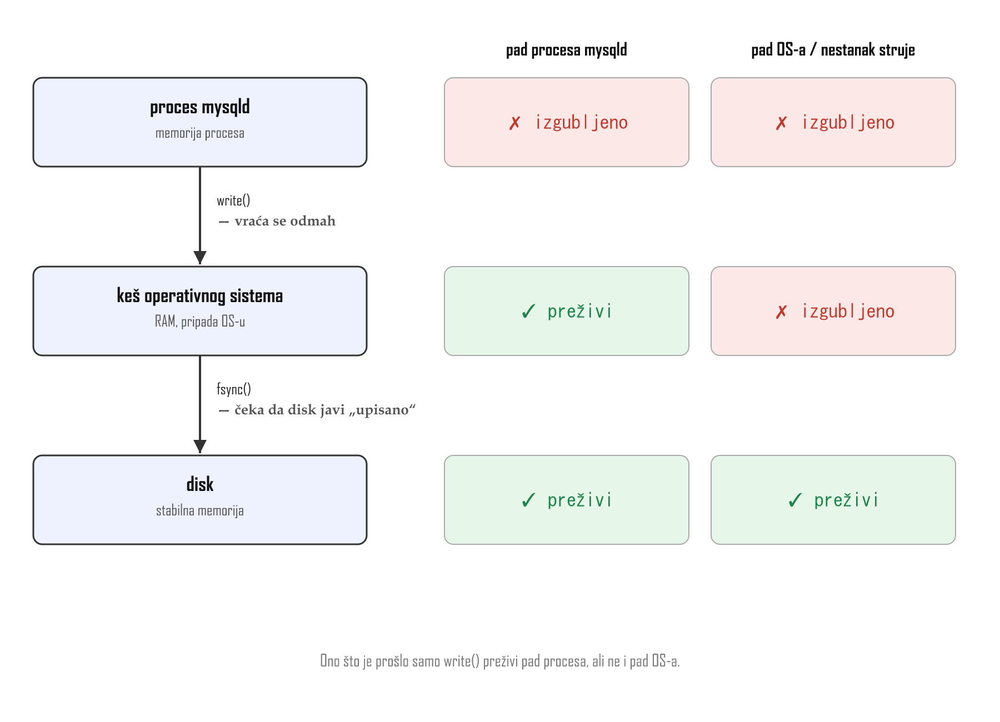
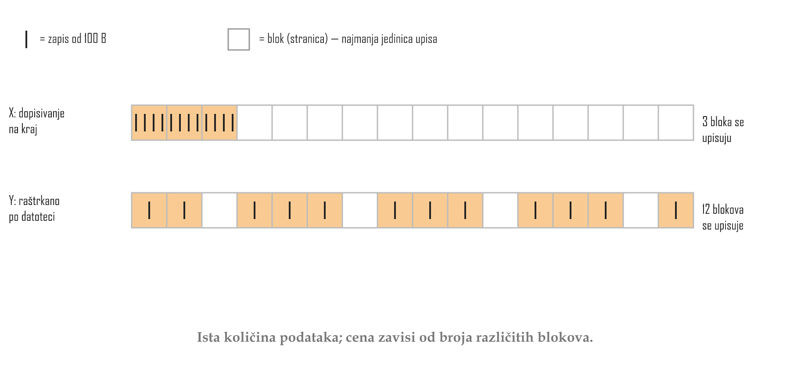
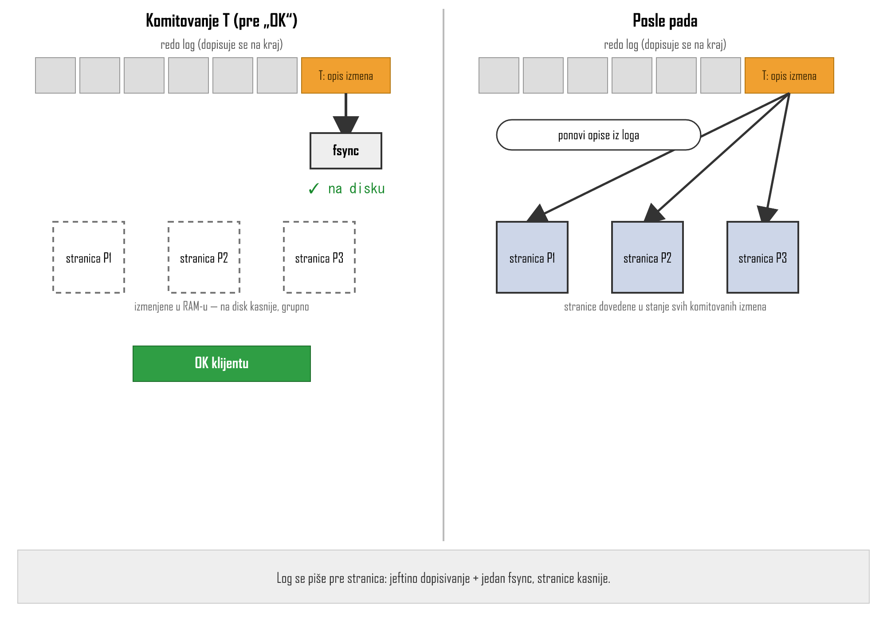
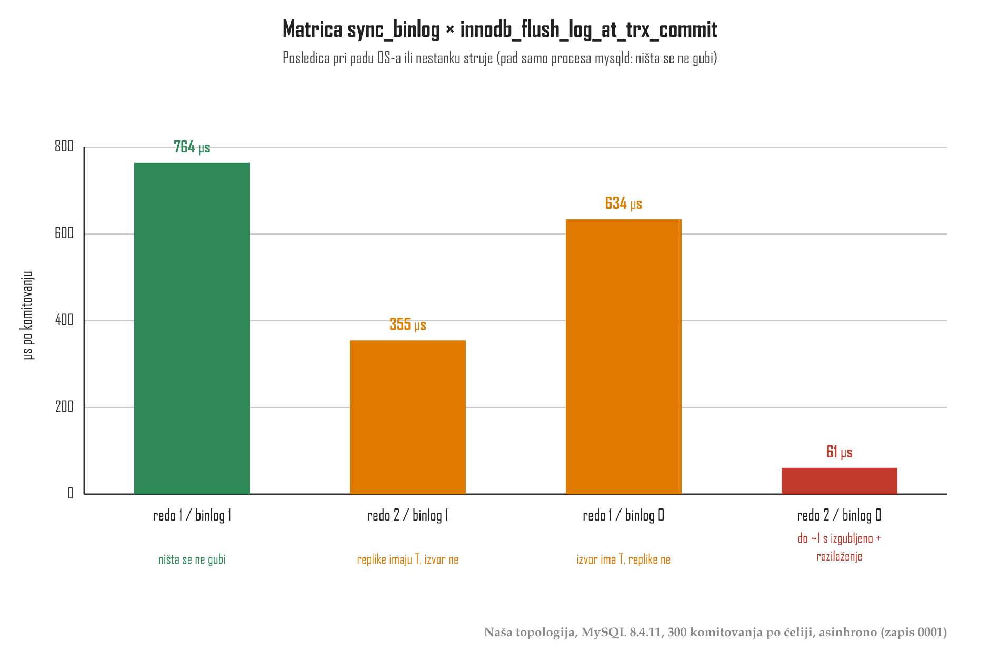
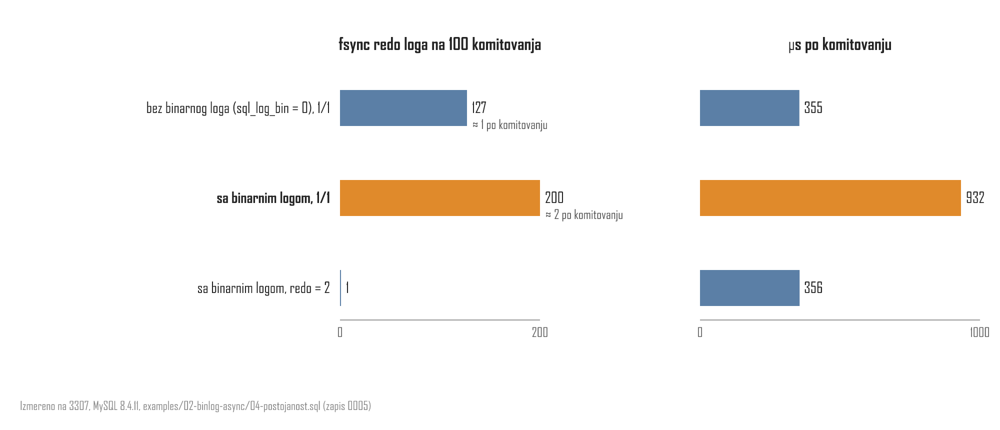

![Vremenska linija od četiri koraka: redo prima T kao pripremljen uz fsync; binarni log prima T uz fsync, označeno kao tačka odluke; redo prima T kao komitovan; OK klijentu. Pad A je između prvog i drugog koraka: binarni log nema T, oporavak radi rollback, replike nemaju T, izvor i replike su usklađeni. Pad B je između drugog i trećeg koraka: binarni log ima T, oporavak radi commit, replike dobijaju T, izvor i replike su usklađeni. Napomena: redo log u oba slučaja izgleda isto, razliku vidi samo binarni log.](../viz/viz-l03-dvofazno-komitovanje-v2-1791542519617.png)
Lekcija 03 · Poglavlje 3, deo B (Binarni log, GTID i asinhrona replikacija)
Lekcija 02 je ostavila otvoreno pitanje: da li izvor koji se sruši i ponovo pokrene
i dalje ima transakciju koju je potvrdio. Ova lekcija ga zatvara, od RAM-a do matrice
sync_binlog × innodb_flush_log_at_trx_commit.
write
nije fsync i koja vrsta pada briše šta; (2) zašto baza dopisuje u log umesto da
upisuje stranice (WAL, redo log); (3) zašto dva loga traže dvofazno komitovanje i koje je
pravilo oporavka; (4) šta svaka ćelija matrice gubi i koliko košta.
RAM je nepostojan, a disk postojan. To je polazna tačka. Ali „upisano u datoteku“ ne znači „na disku“. Program ima dva različita poziva:
write() | OS kopira podatke u svoj keš u RAM-u i odmah vraća „uspelo“; na disk ih prepisuje kasnije, kad sam odluči |
fsync() | OS gura keš te datoteke na disk i ne vraća se dok uređaj ne javi da je upisano (na Windowsu: FlushFileBuffers) |
Keš OS-a pripada operativnom sistemu, a ne procesu mysqld. Zato
„pad“ nije jedna stvar:
posle write, pre fsync | preživi pad procesa mysqld; ne preživi pad OS-a ni nestanak struje |
posle fsync | preživi oba |

write() preživi pad procesa mysqld, ali ne i pad OS-a. Izvor: fsync(2).Disk ne upisuje bajtove nego cele blokove, a InnoDB radi sa stranicama od 16 KB. Cena upisa zavisi od toga koliko različitih blokova diraš, ne od toga koliko bajtova menjaš. Hiljadu zapisa od 100 B dopisanih na kraj jedne datoteke staje u dvadesetak blokova. Isti zapisi razbacani po datoteci znače hiljadu celih blokova. SSD nema glavu koja se pomera, ali ni on ne piše manje od bloka.
Red ima svoje mesto: stranicu u B+ stablu po primarnom ključu. Transakcija koja menja tri reda u tri
tabele dira tri stranice na tri mesta. Upisati ih sa fsync pri svakom komitovanju znači
raštrkano, sinhrono pisanje celih stranica dok klijent čeka.

Obećanje „OK“ traži da na disku bude informacija o izmeni, a ne baš izmenjena stranica.
Zato baza pre „OK“ dopiše kratak opis izmene na kraj loga i pozove fsync samo za log.
Stranice upisuje kasnije, grupno. Posle pada ponovi opise iz loga nad stranicama. To je
write-ahead logging (WAL), a u InnoDB-u se taj log zove redo log.

fsync loga; stranice se pišu kasnije, a posle pada se obnavljaju iz loga.Ovo se ne izvodi ni iz čega. MySQL je od početka imao više mašina za skladištenje. Binarni log je pripadao serveru, iznad svih mašina, i služio je za replikaciju. Redo log pripada InnoDB-u i služi za oporavak. Zato ih danas ima dva, i svako komitovanje mora da upiše T u oba.
| binarni log | sloj servera · iskazi ili redovi (ROW) · replikacija · čuva se dok se ne obriše |
| redo log | sloj InnoDB-a · bajtovi u stranicama · oporavak od pada · briše se do checkpointa |
Između dva odvojena upisa uvek postoji trenutak u kome je jedan gotov, a drugi nije. Ako je prvi konačan i pad dođe pre drugog:
| redo pa ⚡ pa binlog | oporavak obnovi T iz redo loga, ali binarni log ga nema → izvor ima T, replike nikad |
| binlog pa ⚡ pa redo | replike dobiju T iz binarnog loga, ali InnoDB ga nema → replike imaju T, izvor ne |
Prekršen je K2 iz lekcije 02 (iste promene), i to tiho: ništa ne poredi dva stanja.
COMMIT(T): 1 redo.append(T, PREPARED); redo.fsync() // phase 1: prepare ⚡ crash A → binlog does not contain T 2 binlog.append(T); binlog.fsync() // phase 2: DECISION POINT ⚡ crash B → binlog contains T 3 redo.append(T, COMMITTED) // records the decision 4 return "OK" to client RECOVER(): // on restart after a crash for each T marked PREPARED in redo: if binlog.contains(T): commit(T) // crash B else: rollback(T) // crash A
Pri padu A i pri padu B redo log kaže isto: „pripremljen“. Razliku vidi samo binarni log. A binarni log je jedino što replike ikada dobiju (K3). Zato je pravilo oporavka: pripremljen T koji je u binarnom logu se komituje, a koji nije, poništava se. Izvor se povinuje svom binarnom logu, i time ostaje usklađen sa replikama.
innodb_flush_log_at_trx_commit | 1 write + fsync pri svakom komitovanju (podrazumevano) · 2 write pri komitovanju, fsync oko jednom u sekundi · 0 write + fsync oko jednom u sekundi |
sync_binlog | 1 fsync pri svakom komitovanju (podrazumevano od 5.7.7) · 0 MySQL ne zove fsync, OS odlučuje · N posle svakih N grupa komitovanja |
Podrazumevano 1/1 je odluka, ne posledica: do 5.7.7 sync_binlog je
podrazumevano bio 0. Posledice se izvode iz odeljaka 1 i 6:
| 1 / 1 | pad mysqld: ništa · pad OS-a: ništa; „OK“ znači da je T na disku u oba loga |
| redo 1, binlog 0 | pad mysqld: ništa · pad OS-a: binarni log može da izgubi T koji je InnoDB komitovao → izvor ima T, replike nikad |
| redo 2, binlog 1 | pad mysqld: ništa · pad OS-a: redo gubi pripremu, binarni log ima T → replike imaju T, izvor ne (izvedeno) |
| redo 0 | i pad samog mysqld briše do ~1 s komitovanih transakcija |
Red „redo 1, binlog 0“ priručnik navodi doslovno. Red „redo 2, binlog 1“ i kolonu „pad mysqld“
priručnik ne razlaže red po red; izvedeni su iz write/fsync i dvofaznog
komitovanja. Cena na našoj topologiji (zapis 0001, 300 komitovanja po ćeliji, asinhrono):

fsync skraćuje komitovanje i otvara jedan oblik gubitka ili razilaženja pri padu OS-a. Podaci: naša topologija, MySQL 8.4.11, 300 komitovanja po ćeliji, asinhrono (zapis 0001).Preduslov: topologija pokrenuta (topology.ps1 start), konekcija na
3307 kao root. Skripta privremeno menja innodb_flush_log_at_trx_commit,
vraća ga na 1 i briše probnu bazu durability_lab. Ceo fajl: examples/02-binlog-async/04-postojanost.sql.
SELECT @@sync_binlog, @@innodb_flush_log_at_trx_commit, @@innodb_flush_method; -- after CREATE DATABASE durability_lab, table writes and procedure hundred_commits from the file: SELECT VARIABLE_VALUE INTO @f0 FROM performance_schema.global_status WHERE VARIABLE_NAME = 'Innodb_os_log_fsyncs'; SET @t0 = NOW(6); CALL hundred_commits(); -- 100 INSERTs, each its own commit SELECT VARIABLE_VALUE - @f0 AS redo_fsyncs_per_100, TIMESTAMPDIFF(MICROSECOND, @t0, NOW(6)) / 100 AS us_per_commit FROM performance_schema.global_status WHERE VARIABLE_NAME = 'Innodb_os_log_fsyncs';
1 / 1 i unbuffered (Windows). Tri rezima iz fajla, otprilike: no binlog, 1/1 redo_fsyncs_per_100 ≈ 100-130 (~1 po komitovanju), us_per_commit par stotina binlog, 1/1 redo_fsyncs_per_100 ≈ 200 (~2 po komitovanju), us_per_commit 2-3 puta veći binlog, redo=2 redo_fsyncs_per_100 ≈ 0-5, us_per_commit opet par stotina

fsync-a po komitovanju umesto jednog, a komitovanje je oko 2,6 puta sporije. Izmereno na 3307, MySQL 8.4.11 (zapis 0005).Kako se ovo čita: kad binarni log učestvuje, redo log dobija dva
fsync-a po komitovanju umesto jednog, a ukupno vreme raste dva do tri puta. To se slaže sa
slikom dvofaznog komitovanja (priprema i commit, plus fsync binarnog loga), ali tačan raspored
fsync-ova unutar grupnog komitovanja nije potvrđen izvorom, pa se u radu navodi kao merenje,
ne kao opis mehanizma. Pri vrednosti 2 redo log gotovo ne zove fsync, i to je cena koju ćelija
„2/1“ plaća rizikom iz odeljka 7.
Bez gledanja gore. Svako pitanje proverava jedan čvor lekcije.
1. mysqld pozove write() za zapis o T, bez fsync(), i vrati „OK“. Zatim se sruši Windows. Šta je sa zapisom?
write() predaje podatke kešu OS-a u RAM-u; pad OS-a briše RAM. Pad samo procesa mysqld bi ih ostavio.
2. T menja po jedan red u tri stranice od 16 KB, ukupno ~300 B. Šta košta upis stranica sa fsync pri komitovanju?
Jedinica upisa je stranica, a stranice imaju svoja mesta u B+ stablima; „OK“ čeka fsync.
3. Koji dizajn daje postojano „OK“ bez čekanja na raštrkani upis stranica?
WAL: dopisivanje je jeftino, fsync loga čini „OK“ postojanim, a posle pada se opisi ponove nad stranicama.
4. Posle pada 3307, iz kog loga se obnavljaju stranice, a koji se šalje replikama?
Redo log je InnoDB-ov WAL za oporavak; binarni log je log servera za replikaciju. Dva loga su istorijska odluka.
5. Bez koordinacije: T je u redo logu sa fsync, pa pad pre binarnog loga. Posle restarta?
Oporavak obnavlja T iz redo loga, a replike vide samo binarni log (K3). K2 je prekršen.
6. Oporavak zatekne T kao „pripremljen“ u redo logu. Koje pravilo čuva usklađenost sa replikama?
Binarni log je tačka odluke jer je on jedino što replike dobijaju. „Uvek poništi“ razilazi izvor i replike ako je pad došao posle upisa u binarni log.
7. sync_binlog = 1, innodb_flush_log_at_trx_commit = 2. „OK“ za T, pa nestanak struje. Šta je moguće?
Binarni log je dobio fsync; priprema u redo logu je bila samo u kešu OS-a, koji nestanak struje briše.
8. sync_binlog = 0, innodb_flush_log_at_trx_commit = 2. „OK“ za T, pa se ubije samo mysqld. Šta je sa T?
Keš OS-a pripada OS-u, ne procesu. Bez fsync opasan je samo pad OS-a ili nestanak struje.
Rezultat: 0 / 0